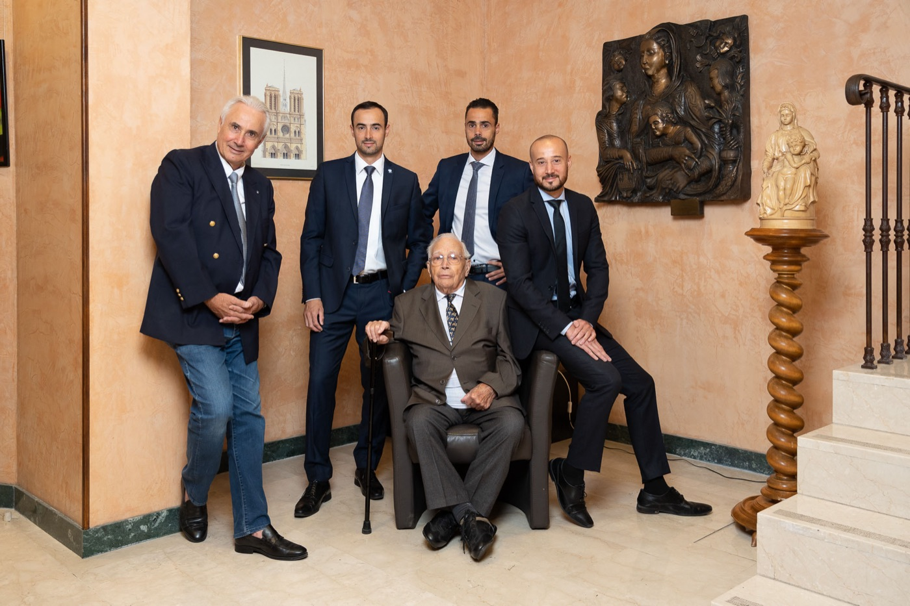
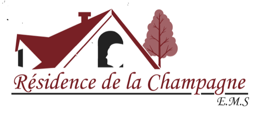

Parce que ceux qui restent ont déjà assez à porter.
Prévoyance funéraire · Genève
Décidez aujourd’hui.
Décidez aujourd’hui.
Soulagez vos proches demain.
Un contrat de prévoyance funéraire pour préparer vos obsèques de votre vivant : vos volontés sont respectées, et ceux que vous aimez n’ont ni à décider dans l’urgence, ni à avancer les frais.
Démarche sans engagement — vos données restent confidentielles.
130+ans d’histoire
familiale genevoise
familiale genevoise
100 % confidentiel
130+ans d’expérience, dirigée par la famille Murith
3 000+personnes nous ont confié leurs obsèques
2modalités de paiement, selon votre budget
0 CHFd’engagement pour recevoir votre devis
Le but de la prévoyance funéraire
Un geste simple, un poids en moins
Tout savoir sur mes obsèques
Un geste simple, un poids en moins
pour votre famille.
De plus en plus de personnes anticipent l’organisation de leurs propres obsèques. Le principal but : libérer financièrement leurs proches, et avoir la certitude que leurs volontés seront respectées.
Vos proches sont libérés du financement
Vos obsèques sont organisées et financées d’avance. Votre famille n’a pas à avancer de frais dans un moment où l’on ne devrait penser qu’à se retrouver.
Vos volontés, noir sur blanc
Cérémonie, musique, dispositions : chaque souhait est consigné et sera exécuté.
Un moment à vous
Prenez le temps, à votre rythme, avec un conseiller à l’écoute.
Parler à un conseiller
Une démarche en 3 étapes
Voir le détail
Simple, humaine, sans engagement.
Définissez vos souhaits
Répondez au questionnaire en quelques minutes : formule simple ou demandes particulières, vos envies et vos priorités.
≈ 5 minutes en ligneOrganisez avec un conseiller
Un conseiller funéraire vous reçoit, vous remet un devis adapté et choisit avec vous la façon de financer votre contrat.
Devis sans engagementFinalisez votre contrat
Vous signez, recevez votre carte portant votre numéro de contrat, et retrouvez vos informations à tout moment sur votre espace en ligne.
Espace personnel
Questionnaire
Trois questions pour préparer votre devis.
Dites-nous simplement ce qui compte pour vous. Un conseiller Murith reprend ensuite contact pour affiner votre offre.
Commencer le questionnaire01Quel type de funérailles imaginez-vous ?
02Comment préférez-vous financer ?
03Comment souhaitez-vous poursuivre ?
Facilités de paiement
Tous les détails du paiement
Deux façons de financer, à votre mesure.
Dans les deux cas, finaliser votre contrat vous donne accès à votre espace en ligne pour consulter vos informations à tout moment.
Versement unique
Le paiement couvre l’intégralité des prestations funéraires en une seule fois.
- Vos obsèques sont réglées en totalité
- Carte de contrat à votre numéro, transmise dès réception du paiement
- Rien à régler pour vos proches
Paiement échelonné
Plus flexible : amortissez le financement sur plusieurs mois.
- Montant total des prestations garanti
- Compte de suivi des paiements, sur demande
- Carte de contrat transmise dès le premier versement
En cas de décès avant le terme du paiement, le solde est réclamé à la succession.

3 000+personnes nous ont déjà confié l’organisation de leurs obsèques.
Nos garanties
Une entreprise familiale genevoise, depuis plus de 130 ans.
- Une famille, pas un guichetDirigée par la famille Murith depuis plus de 130 ans, avec un accompagnement humain.
- ConfidentialitéVotre démarche reste privée, de la première question à la signature.
- Votre carte de contratElle porte votre numéro de contrat, pour que vos proches sachent qui prévenir.
- Une chaîne d’entraideNous travaillons main dans la main avec le personnel soignant et les administrations.
Partenaires :EXIT

Questions fréquentes
Vous vous demandez peut-être…
Une autre question ? Appelez-nous au +41 22 809 56 00.
Pourquoi souscrire un contrat de prévoyance funéraire ?
Pour décider vous-même de vos obsèques et en régler le financement d’avance. Vos proches n’ont ni à faire des choix dans l’urgence, ni à avancer les frais.
Quelles sont les garanties chez Murith Prévoyance ?
Votre contrat fixe les prestations que vous avez choisies et le montant total des prestations est garanti. Le détail de vos garanties vous est remis avec votre devis.
Comment ma famille accède-t-elle aux dispositions prévues ?
Vous recevez une carte portant votre numéro de contrat. Vos proches la présentent à Murith, qui exécute alors les volontés consignées dans votre contrat.
Contact
Parlons-en, à votre rythme.
Boulevard de la Cluse 89, 1205 Genève — +41 22 809 56 00